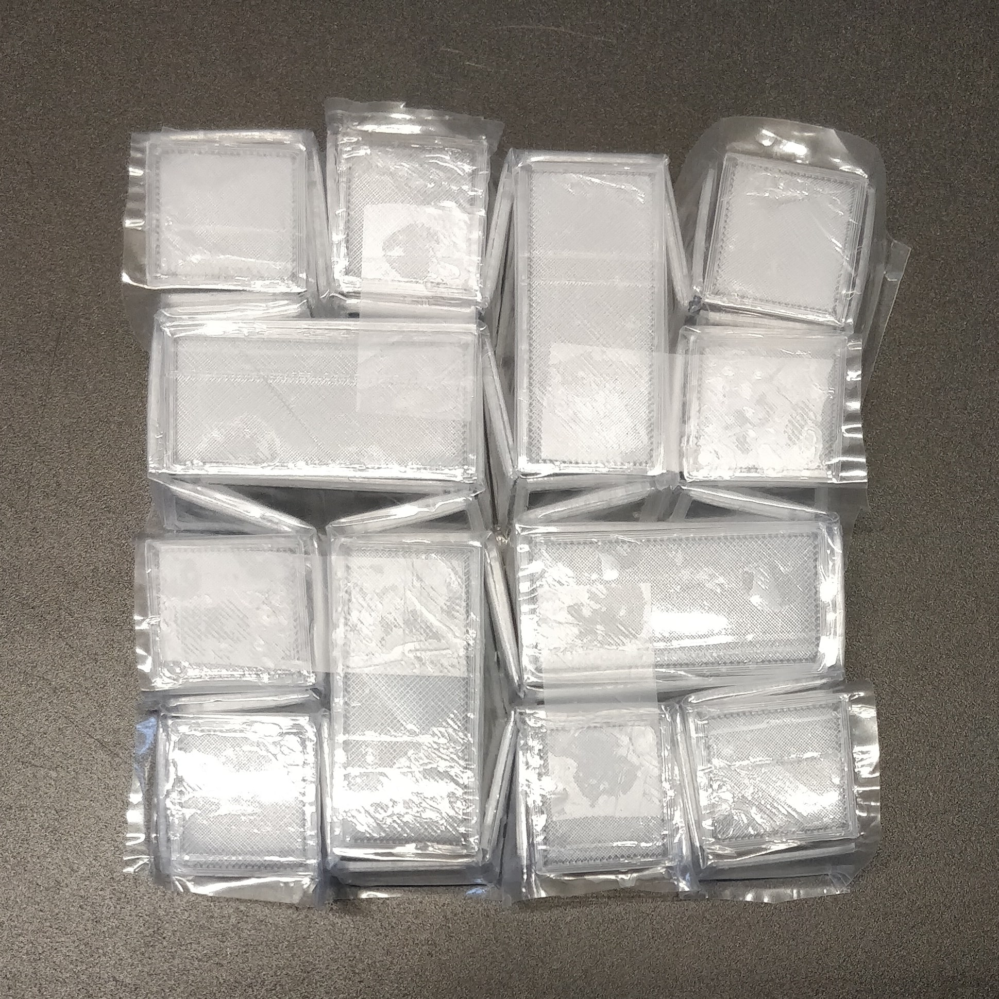

Looking into ways of creating shape shifting materials in the context of the automotive industry, a creative
exploration was considered to find out how to create shape shifting materials that could even more clearly
indicate the intention of autonomous omnidirectional vehicles.

Imagining a future in which there are omnidirectional vehciles that are also autonomous along with human
controlled vehicles and other road users. Communicating the intention of a vehicle will be an important
development of these future vehciles. During project 3 the idea was explored to use origami to change the shape
of the lighting fixtures but also other parts of the car to indicate direction.